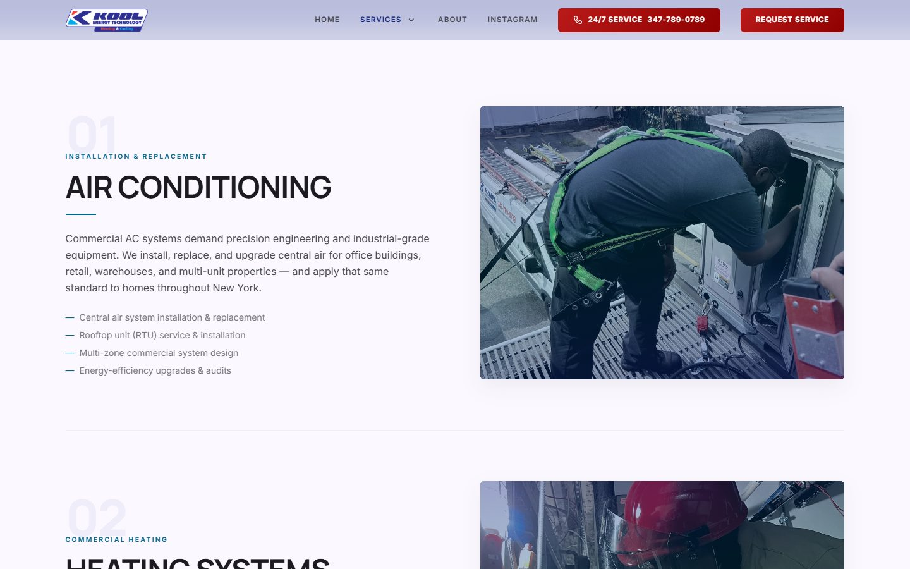
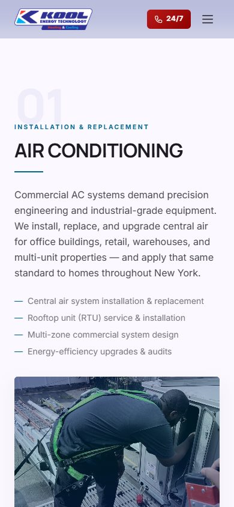

Option A · Current page
Stacked rows
All six services appear one after another. Each row pairs a large photo with the description and the list of what's included, alternating sides as visitors scroll.
- Works well for
- Visitors who read the whole page, and showing off every field photo at full size.
- Trade-off
- The longest page, especially on phones. Services near the end are easy to miss.

